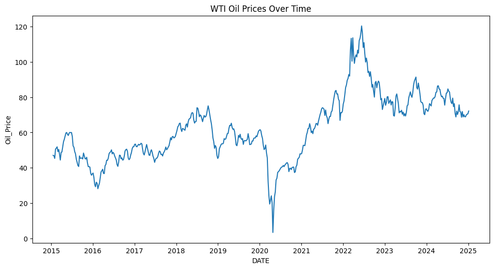

Oil Prices and the US Dollar
Examines weekly oil and dollar returns. The saved model explains about 2.3% of in-sample variation, highlighting the limits of a simple relationship.

Business question
Is weekly WTI oil-price movement associated with changes in the broad US dollar index?
Approach
Retrieve FRED DCOILWTICO and DTWEXBGS series, align dates, resample weekly observations, compute returns and a lagged oil-return feature, and fit an OLS model.
Result
The saved model uses 521 observations and reports R-squared of 0.023—about 2.3% of weekly return variation explained in-sample. The USD coefficient is negative in this specification. The low explanatory power is a finding, not something to hide.
Limits and next steps
The association does not establish causality or a reliable forecast. Examine residual dependence, outliers, the negative WTI episode in 2020 and out-of-sample performance before extending it. The notebook includes executed historical outputs; a full rerun requires the documented packages and access to FRED.
Historical source: WTI oil price and broad US dollar index, January 2015 to January 2025.